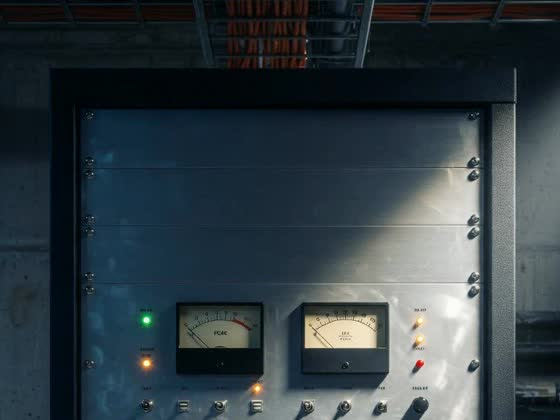
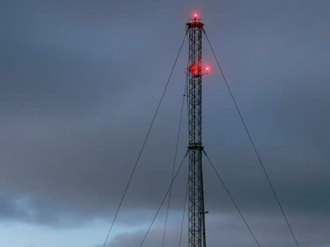
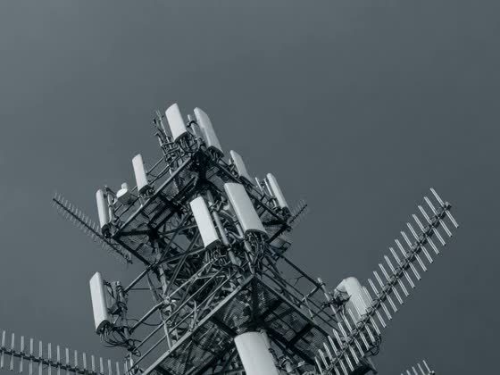
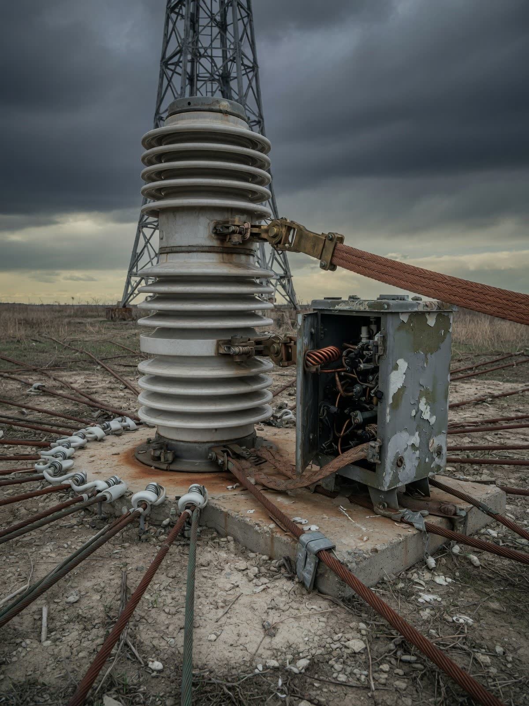
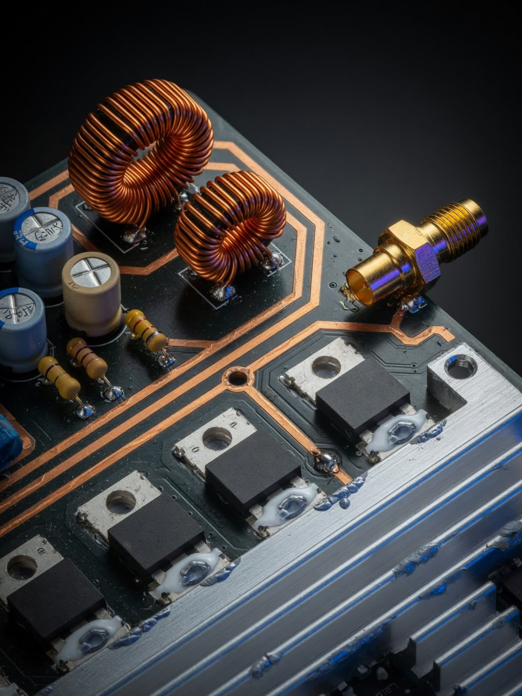
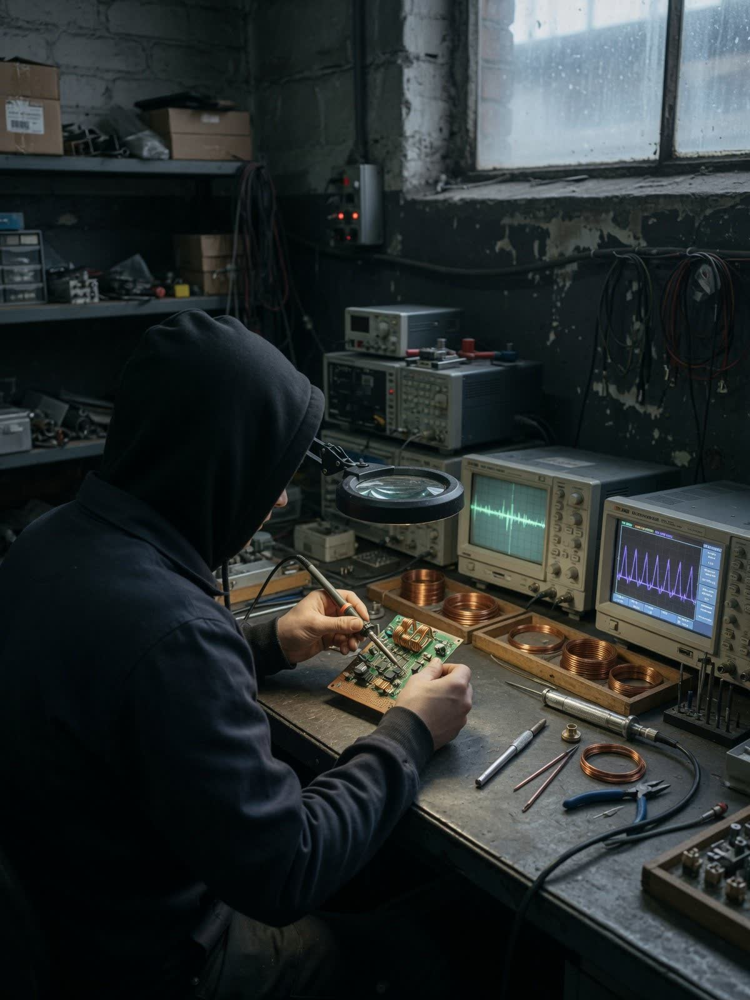

REC
RECSistemas críticos
Cadenas completas de transmisión con redundancia y monitoreo remoto.
Ingeniería RF · Radiodifusión · Comunicaciones críticas
Diseñamos y fabricamos transmisores y enlaces que operan décadas donde nada más opera.
0mástil Armada 60 m
0km enlace HF Rapa Nui
24/7operación continua
0familias de producto
01Trayectoria
Infraestructura crítica de comunicaciones con exposición total a ambiente marino.

DefensaEl enlace de voz más largo del país sobre el Pacífico, operando 24/7.

HF · MarítimoMensajes de seguridad marítima que la costa entera depende de recibir.

NAVTEX02Capacidades
Fabricación y suministro bajo normas internacionales de broadcasting. Cada equipo, diseñado para operar décadas en territorio extremo.
RECCadenas completas de transmisión con redundancia y monitoreo remoto.

RECEtapas de potencia AM/FM eficientes, estables y mantenibles en terreno.

RECDiseño de antenas, líneas y adaptación de impedancia a medida del sitio.
 REC
RECDe la ingeniería al ON AIR: instalación, puesta en marcha y capacitación.
03Catálogo
Cada producto como en una keynote: cuatro vistas que rotan con tu scroll — o un video cuando exista.
AM · Alta potencia
Cobertura de onda media para radiodifusión nacional.
FM · Broadcast
Del estudio a la antena con la menor distorsión posible.
NAVTEX · Seguridad marítima
Mensajes de seguridad que llegan a cada embarcación costera.
Torres · Estructuras
Estructuras arriostradas y autosoportadas para todo clima.
Índice — 15
04Espectro
490.0kHz
NAVTEX
Seguridad marítima internacional en 518 kHz.
TX NAVTEX · Antenas · FuentesCobertura nacional de radiodifusión con alta eficiencia.
TX AM 1–20 kW · Mástil · ATUEnlaces de voz y datos a miles de kilómetros, como Rapa Nui.
Enlaces HF · Antenas · ReceptoresBroadcast de alta fidelidad desde 50 W hasta 10 kW.
TX FM · STL · Combinadores05Proyectos

Chile · Onda media
Transmisor, mástil y puesta en ON AIR.
Rapa Nui · 3.759 km
3.759 km sobre el Pacífico, 24/7.
Santiago · STL
Audio digital punto a punto con redundancia.
Zona costera · Torres
Estructuras certificadas para viento y salinidad extremos.

ON AIR — PLANTA SAN MIGUELPlanta Sender · San Miguel, Santiago
06Nosotros
Sender (BIS SpA) diseña y fabrica equipos de radiodifusión y telecomunicaciones en Santiago de Chile.
Cada equipo se prueba en condiciones reales antes de salir de la planta.
Un transmisor Sender se instala una vez y trabaja décadas.
Que la señal crítica nunca falte.
De Arica a Rapa Nui y la Antártica.
Soporte y repuestos por décadas.
07Contacto
Radiodifusión, defensa, comunicaciones marítimas o infraestructura crítica: la ingeniería la ponemos nosotros.
Cuéntanos la cobertura que necesitas y devolvemos ingeniería, no folletos.